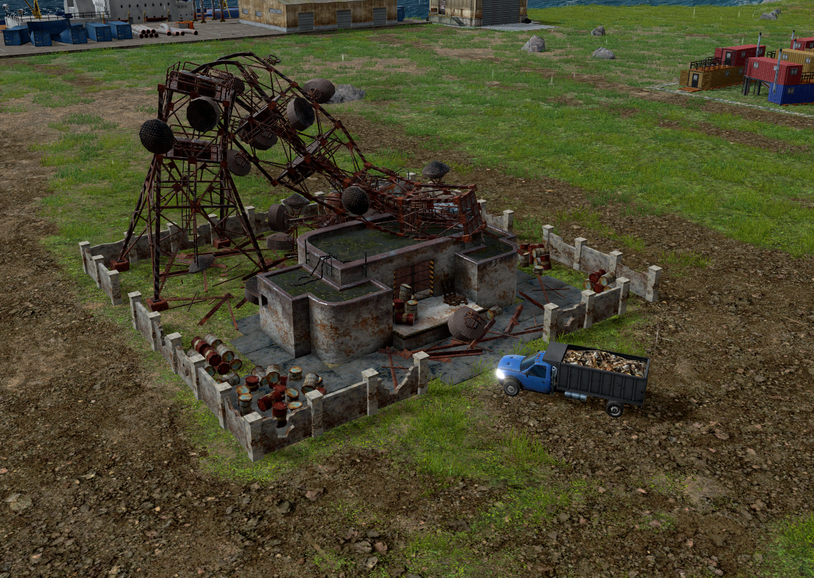
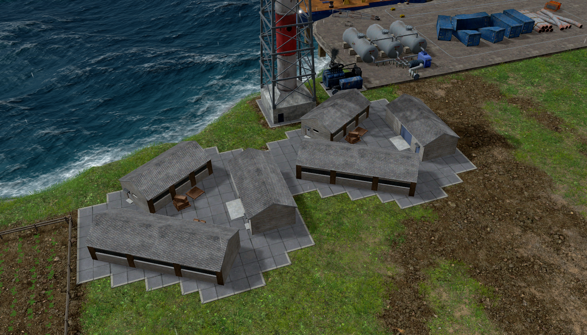

When first starting its important to make sure your tree harvesting machines are working around the clock. Make sure they have plenty of UTs to pickup any resources. Next, it is important to make sure you build your first blast furnace close to the iron scrap deposit. This will make sure your trucks have less distnace to travel when hauling resources.
The faster you can make Iron Bars, the better!

Fig.1 - Iron Scrap Deposit
What Research Should I Start With?
When you first begin make 2 research centers. Make sure to create a deisel generator first! Once you have 2 research centers begin researching Trading Dock as well as Vehicles and Mining. This gives you a good launching point to start off your island!

Fig.2 - Research Centers with Diesel Generator